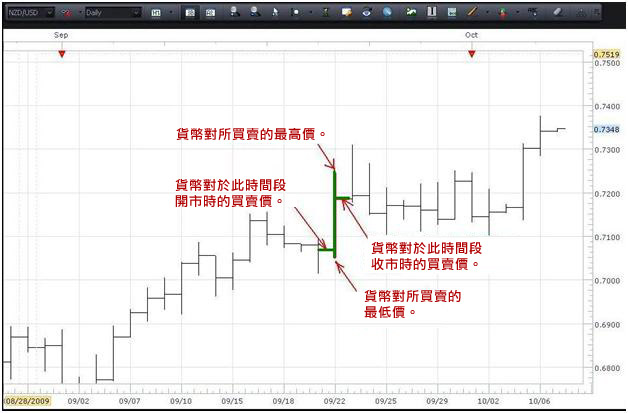
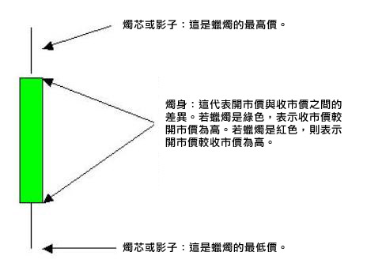

MS
技術分析的基本知識
本節我們將會看看不同類別的圖表，交易者可以利用它們來對貨幣對進行技術分析。
圖表類別
技術分析在於觀察及詮釋圖表，以識別出建立交易的最大可能性。
三種最廣泛使用的圖表類別分別是線型圖、柱型圖及燭柱圖。以下是相關例子。
 線型圖
線型圖
在上述三類圖表中，最基本的是線型圖。這是將一系列資料點(例如貨幣對的收市價)連結成線而制定的。從上例可見，該條線基本上跟隨價格行為，因此交易者可以根據所示的過往資料點厘定趨勢的方向。通常來說，線型圖會用於較長的時間段,以簡單快速地判斷貨幣對在指定時間段內有什麼樣的走勢。
 柱型圖
柱型圖
柱型圖能為交易者提供寶貴的額外資料。現在我們就放大柱型圖，集中於一條柱子，以看看它能為我們提供什麼資料。
我們所看的是日圖 – 即每一條柱子代表貨幣對在24小時內的買賣價。特別是，柱子將會顯示此貨幣對於開市時的買賣價、于時間段內所達致的最高及最低價，以及貨幣對當日的最後買賣價。下圖顯示了這些資料。
 柱型圖
(新每日柱子將於美東時間下午5開市，因為對上一條柱子在同一時間收市。)
這裏所提供的額外資料可大大幫助交易者。例如，交易者可以得知在此時間段內貨幣對繼續拾級而上，因為收市價高於開市價。
最後，我們將會看看最廣為使用的外匯交易圖表類型 – 燭柱圖。
以下您將會看到燭柱圖詮釋的基本知識。


只需稍為看看每日燭柱圖，交易者便可即時瞭解到使用這種圖表相較於線型圖及柱型圖的優點。根據蠟燭的顏色 – 藍色代表收市價較開市價為高的看好蠟燭，而紅色代表收市價較開市價為低的看淡蠟燭 – 便能明顯看出哪些日子有向上動力，及哪些日子有向下動力。

現在仔細看看上圖。
您可以看到，燭柱圖所提供的資料(最高、最低、開市及收市價)與柱型圖所提供的資料相同。然而，當以這種形式表達時，資料便變得一目了然，當中的原因是蠟燭的顏色。
研究任何蠟燭時，即看好蠟燭及看淡蠟燭，燭芯頂部及燭芯底部分別表示貨幣對在該時間段內的最高及最低價。除了顏色之外，看好蠟燭及看淡蠟燭之間的主要分別是開市及收市價的位置。
由於藍色蠟燭的收市價高於開市價，燭身頂部就是收市價，而燭身底部就是開市價。就紅色看淡蠟燭而言，燭身頂部就是貨幣對在該時間段內的開市價，而燭身底部就是貨幣對的收市價 … 即看好蠟燭的相反。
在使用燭柱圖時，請緊記，當您使用不同時間段時，每個燭柱圖將只代表該個時間段。因此，若您所看的是日圖，每支蠟燭代表一日(24小時)。若您所參考的是4小時圖，每支蠟燭所代表的是4小時，如此類推。在此處所呈示的三種圖表當中，燭柱圖以一種最容易一目了然的方式提供所有必要資料。
現在您應該瞭解到這三種主要圖表及如何在交易時運用它們。